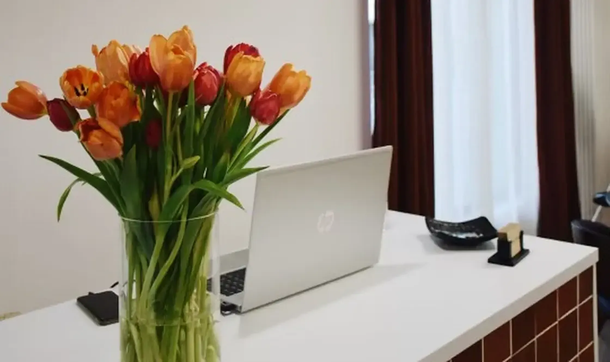
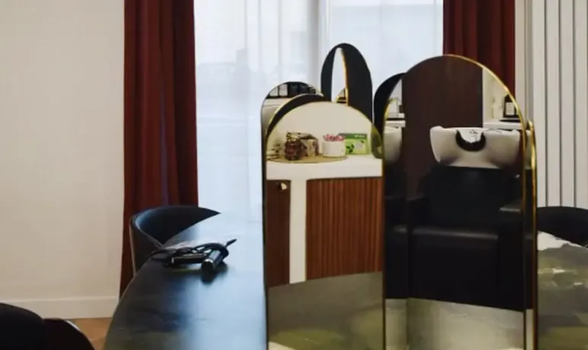
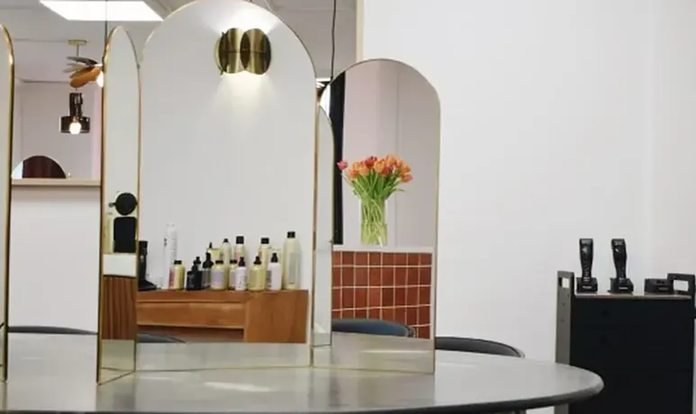
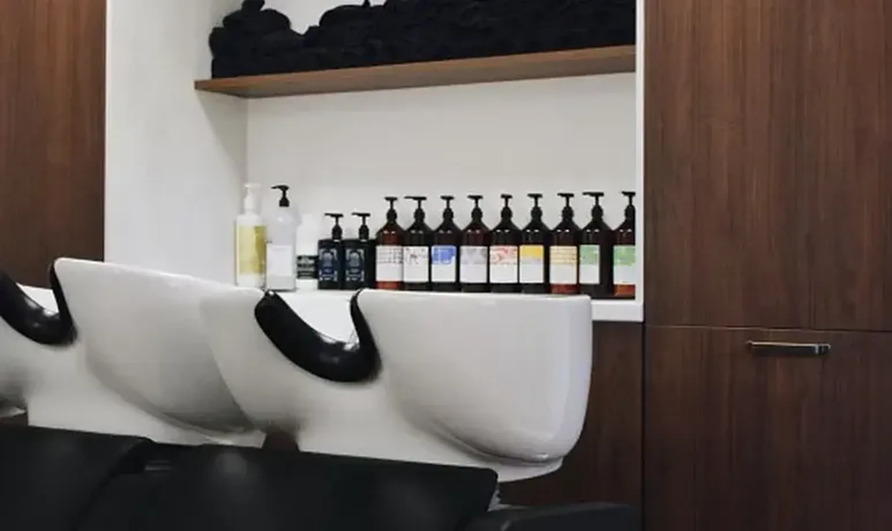
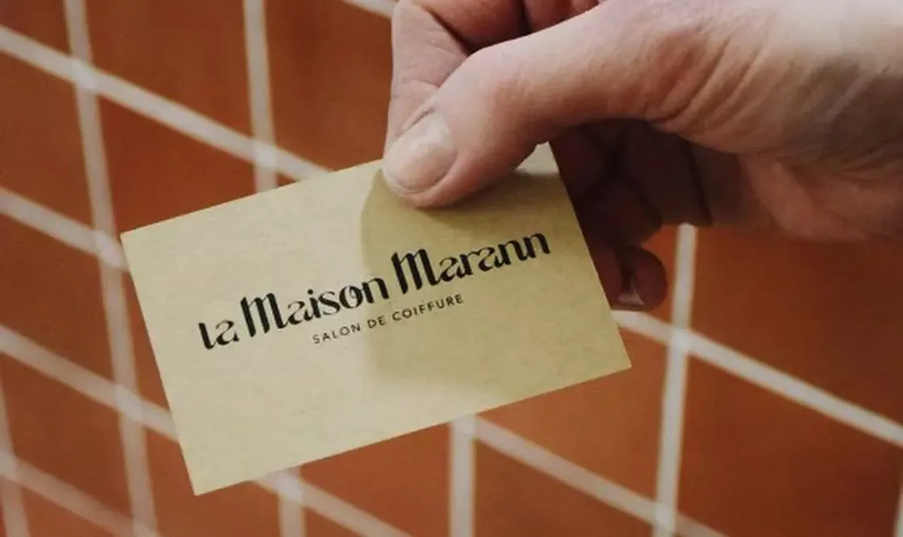

On pousse la porte.
Un café ou un thé, des tulipes sur le comptoir, du carrelage terracotta sous la main. Avant même de s’asseoir, on a compris qu’ici, on prend le temps.



Salon de coiffure à Brest. Coupe, couleur et patine, un café ou un thé pour commencer, un shampoing avec massage du cuir chevelu pour continuer. Marion et Yoann s’occupent du reste.
Ici, tout commence par une conversation. Ce que vous voulez, ce qui vous va, ce qui tiendra dans la durée : on en parle d’abord. Les ciseaux viennent ensuite.


Un café ou un thé, des tulipes sur le comptoir, du carrelage terracotta sous la main. Avant même de s’asseoir, on a compris qu’ici, on prend le temps.
Une frange, un carré, un grand changement ou le simple entretien d’une coupe : Marion et Yoann écoutent, proposent, puis choisissent la coupe, la couleur ou la patine qui vous va vraiment.
Un fauteuil profond, de l’eau chaude, un massage du cuir chevelu qu’on voudrait voir durer. Et des produits à l’odeur agréable, loin de l’ordinaire des salons.
Au miroir, la coupe paraît évidente : celle dont vous aviez l’idée, en mieux ajustée. Et l’envie de revenir, déjà.
Coupe, couleur, patine, shampoing-massage. Pour les tarifs, appelez-nous au 02 98 40 78 89 ou réservez directement en ligne.
Frange, carré, changement de tête ou entretien : la coupe se décide à deux, devant le miroir, avant le premier coup de ciseaux.
La teinte exacte qu’on avait en tête, ou la patine qui avive une couleur sans la bouleverser. Marion et Yoann savent laquelle vous convient.
Le moment qu’on ne veut pas voir finir : fauteuil profond, eau chaude, massage du cuir chevelu.
Envie de changer, ou simplement d’entretenir ? On commence toujours par en parler.
On en parle ?
Réserver un créneau6
jours sur 7
du lundi au samedi
2
coiffeurs, Marion et Yoann
9h30
on ouvre la porte
7
rue Dupleix, à Brest
Cinq avis de clients, repris mot pour mot.
1 / 5
Réservez en ligne, ou appelez-nous : on s’occupe de trouver le bon créneau.
Du lundi au samedi